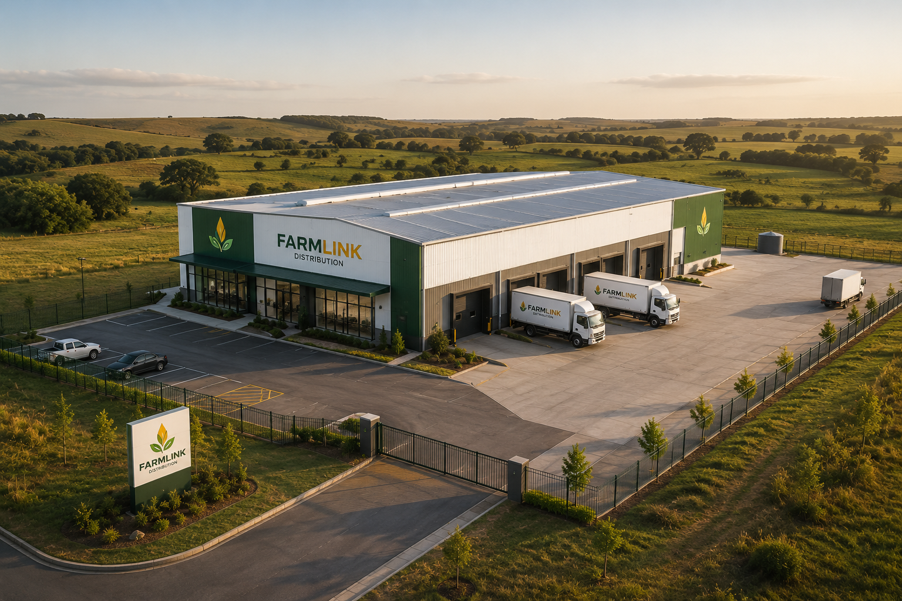
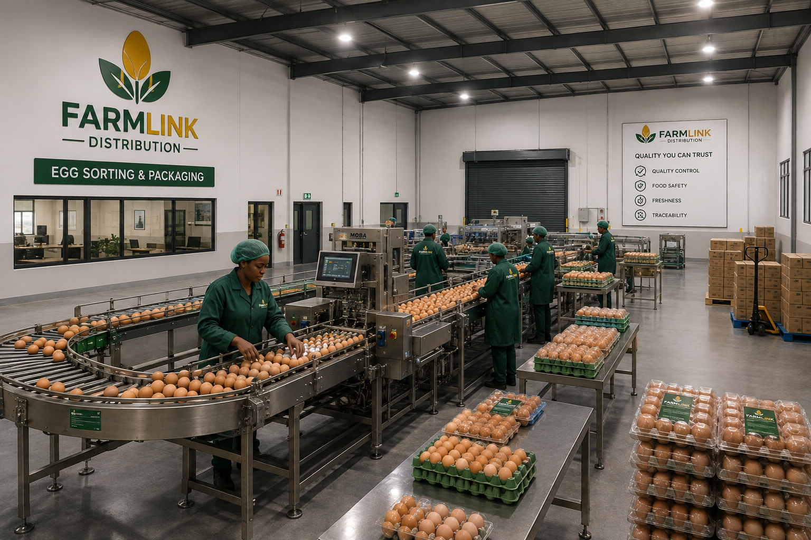
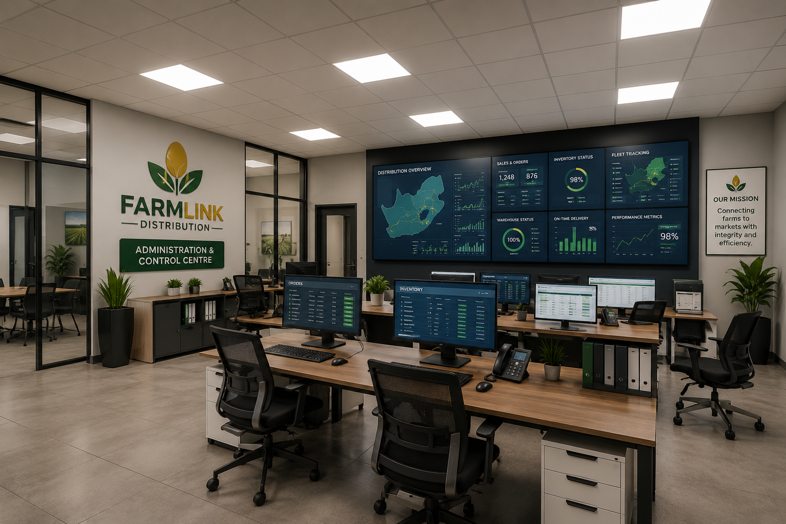
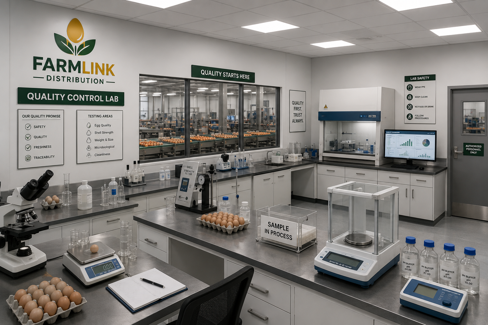
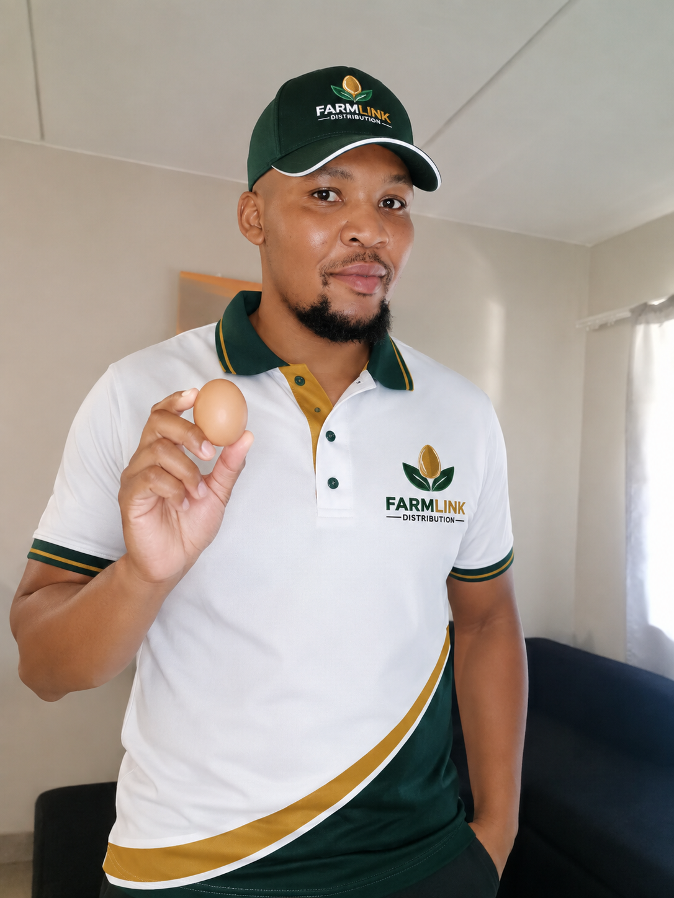

Farmer registration
Farmers submit production capacity, location, product sizes, packaging capability and availability for supplier-network assessment.
Register as a farmer →FarmLink Distribution links egg producers with retailers, wholesalers, bakeries, restaurants, caterers and institutions through structured sourcing, commercial coordination and reliable distribution.
Built for farmers. Designed for business.
About FarmLink
FarmLink Distribution is a Gauteng-based agricultural market-access and distribution business serving customers nationwide.
We register farmers, understand available production, profile business demand, coordinate quotations and support the movement of products from approved suppliers to commercial buyers. Our objective is to make agricultural trade more structured, visible and dependable.

Our services
Each service is designed to reduce friction between producers, procurement teams and delivery requirements.
Farmers submit production capacity, location, product sizes, packaging capability and availability for supplier-network assessment.
Register as a farmer →Retailers, food-service businesses and institutions create buyer profiles for quotations, recurring supply and scheduled delivery.
Register a business →Buyers submit exact quantities, preferred packaging, delivery locations and required dates for commercial review and quotation.
Request an order →FarmLink aligns confirmed demand, supplier capacity, transport arrangements, documentation and delivery schedules.
View our operating model →World-class operating model
Our planned operating framework combines structured administration, supplier data, quality checks and coordinated fulfilment.



Facility images illustrate FarmLink's intended future operating standard and development vision.

Executive leadership
Makwande Gcora is a chemical engineer, entrepreneur and business leader focused on building commercially viable enterprises that create market access, skills development and employment opportunities.
As Founder and Chief Executive Officer of Makwande Chemicals (Pty) Ltd and Makwande Careers, he has developed experience across chemical manufacturing, business development, enterprise partnerships, recruitment, graduate placement and digital audience growth. Through FarmLink Distribution, he is applying this cross-sector experience to agricultural supply chains.
His vision is to establish a technology-enabled distribution network that connects emerging and established farmers with reliable commercial markets, while creating practical roles for graduates in logistics, procurement, quality assurance, administration, sales and data operations.
“Every capable farmer should have a route to market, and every business buyer should have access to a dependable supply partner.”
Digital market influence
FarmLink can use an established professional and social-media audience to recruit farmers, reach commercial buyers, promote opportunities and support partner visibility across South Africa.
Agricultural Entrepreneurship Programme
FarmLink AgriStart supports agriculture students, graduates and aspiring entrepreneurs with business development, mentorship, supplier connections, funding readiness and a pathway to commercial markets.
Complete the application below. The programme is separate from existing farmer and buyer registration.
Start applicationFunding Readiness Centre
FarmLink helps agriculture students, graduates and emerging farmers organise the documents, financial information and business evidence required before approaching funders, incubators and enterprise-development programmes.
Funding is not guaranteed. FarmLink provides readiness support, application tracking and business-development guidance.
At a glance
Submit your agricultural business idea and support requirements.
We review your commercial readiness and the documents you have provided.
Prepare the business, financial and compliance documents required by funders.
Record submissions, outcomes and follow-up actions in one place.
A clear plan covering the business model, market and operations.
Projected revenue, expenses and cash-flow estimates.
Registered business documents and CIPC records.
Tax clearance and relevant SARS compliance records.
Active banking details in the registered business name.
A short presentation explaining the opportunity and funding need.
Paid professional support
Funding assistance is a paid professional service. Payment covers assessment, document preparation support, application coordination and follow-up. FarmLink does not guarantee funding approval.
Business Launch Centre
FarmLink tracks the practical steps required to launch, trade and grow your agricultural enterprise.
Membership and market access
Core registration remains free. Paid plans are optional and designed for members who need priority support, stronger visibility or dedicated account management.
Optional media services
Campaigns are reviewed before publication and scheduled after approval and payment.
Affordable launch pricing for South African farmers and businesses. Registration remains free, and premium services are billed only after approval. Service scope, availability and renewal terms are confirmed in writing before payment.
Pricing and payments
FarmLink confirms the product price, distribution margin, logistics cost and payment terms on a formal quotation or invoice.
Buyers receive a consolidated price that may include the farmer's supply price, FarmLink's distribution margin and agreed logistics costs.
Transport may be included in the quotation or shown separately based on route, volume, vehicle requirement and delivery frequency.
Approved orders are paid by EFT or bank transfer using the banking details shown on the official FarmLink invoice. PayShap may be accepted where confirmed by the accounts team.
Approved suppliers are paid by bank transfer after the agreed delivery, acceptance and supporting documents have been verified.
Controlled onboarding
Complete the farmer, buyer or bulk-order form with accurate commercial details.
FarmLink assesses capacity, requirements, location and supporting information.
Confirmed buyer requirements are aligned with suitable available suppliers.
Pricing, terms and logistics are confirmed before collection or delivery.
Registration and order portal
Choose the correct form. Your submission opens a structured WhatsApp message to the FarmLink team. Membership applications are reviewed before invoicing, and no payment is collected directly on this page.
FarmersApply to join the supplier network.
Business buyersRegister for procurement support.
Bulk customersRequest pricing and availability.